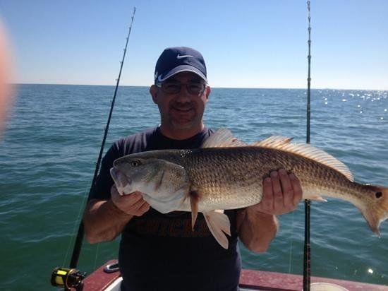

ABOUT
Our story begins on July 4, 1985. Shane Shaw's friends organized an Independence Day get together, inviting him and others to relax and watch fireworks on a fishing charter they had booked three days prior. A lover of the sand and sea, Shane jumped on the invite. On the boat, he met many of his friends' other friends. One of the people onboard was Melissa. They both caught each other's eyes, and under the sparkling sky and calm waters of Clearwater Beach, the two agreed to meet again. It was love at first sight. In 1989, the pair got married and began their life together in Tampa Bay. In 1995, they had their daughter Christina, who would grow up in her father's water-loving, sand-filled footsteps. A part of the United States Marine Corps since the age of 18, Shaw was deployed in the 2001 War in Afghanistan. In 2003, they had their son Ryan. By 2005, with a young and growing family, the Shaw's realized that they loved fishing and being on the water more than anything in the world. In 2006, Shaw was honorably discharged from the USMC and started his first business, Fish On, which specialized in providing fishing gear for active-duty service members and military veterans, made by military veterans.
The company went on to become a multi-million dollar company. Shane eventually sold the company in 2017. Later that year, Melissa came up with the idea of starting another company, this time one that offers charters, rentals, and fishing lessons. She figured that since they were so experienced and passionate about the craft, they could make money while also giving back to the local community. Without hesitation, Shane agreed. They named their business A Fisherman's Life as an homage to both Shane's first company and their family's love for fishing. The better part of 2018 and 2019 were dedicated to developing the company and its services, as well as acquiring the right assets. The company was set to launch in late 2019, but was pushed back because a boat needed to be repaired. In 2020, the Coronavirus struck, but the business thrived off locals spreading the word. In early 2021, Christina Shaw took charge of backend services and is now our lead booking staff. Ryan Shaw is our chief weekend deck hand. He plans to become one of our charter captains in the future. A Fisherman's Life is a true family-run business that is sure to captivate local residents and tourists alike. We are proud to be a local business and pride ourselves in offering the best for our customers.
Shane's first company still lives on, not only in our slogan, but in our gear as well. All of our fishing gear are made by the same company that Shane sold his business to. Still manufactured in Tampa Bay, all of our rental customers will experience the superb craftsmanship and premium quality of Shane's products. Fish on!
Our Owners
Shane Shaw
Fun fact: I've caught more than 4,000 fish so far in my lifetime (yes, I keep track). The largest fish I've ever caught was a 50-pound African Pompano off the coast of Mexico in 2009. I told my kids that if they beat either of my records, I'll buy them a brand new boat of their choice. Let's hope that doesn't happen any time soon!
Melissa Shaw
Fun fact: I was a seasonal charter pilot ferrying people and equipment to Florida's Key West Fishing Tournament from 2002 through 2010. I transported high-profile competitors to and from places like Washington and the Bahamas to Key West for the August tournament. I still hold my private pilot's license and love to take the family on weekend outings in our 1952 Beechcraft Bonanza we call Bonny.
Our Staff

Company Mission
The mission of A Fisherman's Life is dedication to the highest quality of service to by delivering with friendliness, camaraderie, company spirit, as well as providing a love at first sight feeling to our customers. We strongly believe in a family-first model, and strive to our customers and their loved ones first. We pride ourselves in giving back to our community — one catch at a time.